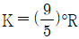
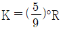
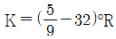
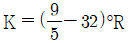

누설비파괴검사기사 (2021-05-15 기출문제)
1과목: 비파괴검사 개론
1. 다음 중 물질의 손상량 평가법으로 비파괴검사방법은?
- 레프리카법
- 충격시험법
- 크리프시험법
- 피로시험법
(정답률: 75%)

2. 일반적으로 검사 후 내부 결함의 크기 및 형상을 장기적으로 보전하기 적합하여 많이 사용하는 비파과검사법은?
- 누설시험
- 자분탐상시험
- 방사선투과시험
- 침투탐상시험
(정답률: 77%)
3. 다음 중 가장 깊은 내부 결함 검사에 유리한 비파과검사방법은?
- 침투비파괴검사
- 누설비파과검사
- 초음파비파과검사
- 와전류비파과검사
(정답률: 76%)
4. 압력용기 내에 있는 이상기체에 2배의 압력을 가하면, 이 이상기체의 부피는 몇 배가 되는가? (단, 온도는 일정하다.)
- 1/2
- 1
- 2
- 4
(정답률: 64%)
5. 다음 재질 중 일반적으로 침투탐상시험이 어려운 것은?
- 다공성의 세라믹
- 티타튬
- 고합금강
- 주철재료
(정답률: 76%)
6. Cu-Zn 합금 중 조직이 α+β로 구성되며 상온에서의 전연성은 낮으나 강도가 큰 것은?
- 90 Cu - 10 Zn 합금
- 80 Cu - 20 Zn 합금
- 70 Cu - 30 Zn 합금
- 60 Cu - 40 Zn 합금
(정답률: 67%)
7. 표점거리 100mm인 인장시험편의 연신율이 20%였을 때, 인장시험 후 늘어난 표점거리의 길이는 몇 mm인가?
- 0.2
- 2
- 20
- 200
(정답률: 66%)
8. 지르코늄의 특성에 대한 설명으로 옳은 것은?
- 비중이 6.5, 융점이 1852℃이며, 내식성이 우수하다.
- 비중이 9.0, 융점이 1083℃이며, 전기저항성이 작다.
- 비중이 1.7, 융점이 435℃이며, 가공성이 양호하다.
- 비중이 7.1, 융점이 420℃이며, 경도가 높다.
(정답률: 55%)
9. Fe-Fe3C 상태도에서 α-Fe와 Fe3C가 층상 형태로 구성되어 있는 조직은?
- 베이나이트
- 펄라이트
- 트루스타이트
- 마텐자이트
(정답률: 66%)
10. 다음 중 로크웰 경도시험에서 스케일에 따른 누르개 형태 및 총 시험하중이 바르게 연결된 것은?
- A scale – 다이아몬드 원추형 – 588.4N
- B scale – 1.588mm 강구 – 1471N
- C scale – 다이아몬드 원추형 – 980.7N
- K scale – 다이아몬드 원추형 – 1471N
(정답률: 50%)
11. 순철의 자기변태와 동소변태에 대한 설명으로 옳은 것은?
- 동소변태점은 660℃이다.
- 자기변태점은 768℃이다.
- 자기변태는 결정격자가 변하는 변태이다.
- 동소변태란 결정격자가 변하지 않는 변태이다.
(정답률: 63%)
12. 강의 변태에서 CCT 곡선에 대한 설명으로 옳은 것은?
- 연속냉각변태 곡선이다.
- TTT 곡선과 같은 곡선이다.
- CAC 곡선과 같은 곡선이다.
- 마텐자이트 생성에만 관계되는 곡선이다.
(정답률: 52%)
13. 78.5%Ni-Fe 합금으로 우수한 고투자율성을 나타내는 합금은?
- 인바(Inbar)
- 엘린바(Elinvar)
- 퍼멀로이(Permalloy)
- 니칼로이(Nicalloy)
(정답률: 48%)
14. 경질 합금의 소결 고온압착법(Hot Press Method)에 대한 설명으로 틀린 것은?
- 완성치수와 가까운 형상의 것을 얻을 수 있다.
- 로 내에서 1개씩 소결되므로 다량 생산방식을 사용하기 어렵다.
- 소결온도와 압력을 잘못 조절하면 액상이 주위에 배어 나와 편석을 일으킨다.
- 조직이 조대하고 경도는 향상되며, 상온에서 압착한 소결체보다 표면조다가 낮다.
(정답률: 45%)
15. 알루미늄 및 그 합금의 질별 기호에 대한 설명으로 틀린 것은?
- T1 : 고온가공에서 냉각 후 자연 시효시킨 것
- T4 : 용체화처리 후 자연 시효시킨 것
- T5 : 고온 가공에서 냉각 후 인공 시효 경화 처리한 것
- T7 : 용체화 처리 후 인공 시효 경화 처리한 것
(정답률: 48%)
16. 용접결함 중 구조상의 결함에 속하는 것은?
- 변형
- 융합 불량
- 형상 불량
- 내식성 불량
(정답률: 56%)
17. 알루미늄 합금을 용접할 때 이용하는 용접방법으로 가장 적합한 것은?
- 피복 아크 용접
- 탄산가스 아크 용접
- 서브머지드 아크 용접
- 불활성 가스 아크 용접
(정답률: 60%)
18. 10분의 용접작업 중 6분 동안 아크를 발생시키고, 4분 동안 아크를 발생시키지 않고 쉬었다면, 이 용접기의 사용율은?
- 20%
- 40%
- 60%
- 100%
(정답률: 67%)
19. 피복 아크 용접봉에 사용되는 피복제 성분 중 아크 안정의 기능을 가지는 것은?
- 페로크롬
- 페로망간
- 산화니켈
- 규산칼륨
(정답률: 43%)
20. 용접 후 변형을 교정하기 위한 방법이 아닌 것은?
- 피닝법
- 역변형법
- 형재에 대한 직선 수축법
- 얇은 판에 대한 점 수축법
(정답률: 52%)
2과목: 누설검사 원리
21. 기포누설시험-침지법에 대한 설명으로 옳은 것은?
- 시험체는 밀봉되어 있거나 시험도중 밀봉할 수 있는 것이어야 한다.
- 시험체를 검사액에 침지한 후 가압하여야 한다.
- 검사 용액으로는 물이 가장 좋다.
- 대형 용기의 적용에 효과적이다.
(정답률: 45%)
22. 동일 시험체에 적용하는 누설시험 중 할로겐 다이오드 검출 프로브 시험을 먼저하고 수압시험을 하는 이유는?
- 일시적으로 미세한 누설이 막힐 가능성 때문
- 할로겐 가스가 오염될 가능성 때문
- 시험 물체의 할로겐 가스를 일소시켜 버리기 때문
- 물이 시험 물체 내부에 남아 시험 물체의 체적을 변화시키기 때문
(정답률: 44%)
23. 다음 진공설비에 여러 개 직경이 다른 파이프가 병렬로 연결되었을 때 총컨덕턴스(conductance)를 계산하는 식은? (단, C : 컨덕턴스를 나타낸다.)
- 1/Ct = 1/C1 + 1/C2 + 1/C3 … + 1/Cn
- Ct = 1/C1 + 1/C2 + 1/C3 … + 1/Cn
- Ct = C1 - C2 - C3 … - Cn
- Ct = C1 + C2 + C3 … + Cn
(정답률: 55%)
24. 다음 중 1 atm과 같은 압력단위는?
- 100 kPa
- 101.3 kPa
- 1000 kPa
- 1013 kPa
(정답률: 66%)
25. 침지법 발포시험(bubble test)의 최대 감도로 가장 적당한 것은?
- 10-6 Pa·m3/s
- 10-3 Pa·m3/s
- 10-2 Pa·m3/s
- 10-1 Pa·m3/s
(정답률: 54%)
26. 기체 방사성동위원소법의 설명 중 주의사항으로 틀린 것은?
- 시험체가 복합물질로 코팅되어 있으면 시험전에 동위원소 표면 흡수율을 검사한다.
- 침지 후 베타선이 제거될 때까지 깨끗한 기체로 세척한다.
- 인체에 직접적인 조사가 되지 않도록 신중하게 작업한다.
- 검사 시에 동위원소의 침지 효과를 높이기 위하여 여러 번 침지한다.
(정답률: 67%)
27. 다음 중 누설률 측정단위가 아닌 것은?
- Lb/in3
- atm·cm3/s
- std·cm3/s
- Pa·m3/s
(정답률: 62%)
28. 헬륨질량분석 누설시험에서 허위누설신호가 발생하는 원인과 가장 거리가 먼 것은?
- 시험시간 증가
- 대기 중 헬륨농도 증가
- 수소와 탄화수소의 오염
- 분석기 튜브 내에서의 이온 산란
(정답률: 48%)
29. 질량 분석계의 분석관 속에서 이온화된 이온들이 검출기에 들어올 때의 상태는?
- 중성(양의 전하나 음의 전하가 아님)을 띰
- 양의 전하를 띰
- α 입자를 띰
- α 입자와 β 입자의 혼합 상태를 띰
(정답률: 54%)
30. 다음 중 헬륨 질량분석기에서 이온을 가속시키는 이유는?
- 자장 내에서 가벼운 이온과 무거운 이온을 분리하기 위해
- 이온을 전자빔으로 이동시키기 위해
- 출력기를 작동시키기 위해
- 필라멘트의 타버림을 방지하기 위해
(정답률: 53%)
31. 가압시험에서 일반적으로 가장 많이 사용되는 가압기체는?
- 공기
- 수소
- 헬륨
- 암모니아
(정답률: 56%)
32. 다음 중 누설을 통한 기체유동에 영향을 미치는 인자로 볼 수 없는 것은?
- 기체 분자량
- 압력차이
- 누설경로(직경, 길이)
- 시스템의 내용적
(정답률: 48%)
33. 진공상자식 발포누설시험의 가장 큰 장점은?
- 10-9 std·cm3/s 정도의 미세한 누설을 검출할 수 있다.
- 용기 또는 시험부에 대해 직접 가압할 필요가 없다.
- 누설률의 정량적 측정이 용이하다.
- 주위 분위기에 따른 차등 가압이 용이하다.
(정답률: 56%)
34. 할로겐누설시험에 사용되는 추적가스의 종류가 아닌 것은?
- 염소
- 불소
- 수소
- 브롬
(정답률: 46%)
35. 온도 °R을 절대온도[K]로 환산하는 식은?




(정답률: 47%)
36. 누설검사에 이용되는 비파괴검사 원리로 가장 거리가 먼 것은?
- 압전의 원리
- 초음파의 원리
- 기체의 열전도율
- 방사성동위원소의 계측
(정답률: 43%)
37. 다음 중 기체에 의해 작용된 실제 힘을 측정하는 게이지가 아닌 것은?
- 멕리오드(Mcleod) 게이지
- 버돈(Burdon) 게이지
- 다이아프램(Diaphragm) 게이지
- 피라니(Pirani) 게이지
(정답률: 52%)
38. 헬륨 질량 분석기의 검출 프로브법(가압법)에서 감도에 영향을 주는 인자가 아닌 것은?
- 복잡한 검사품 모양
- 검사품 내부에서의 헬륨 추적가스의 농도
- 큰 누설로 인한 공기 중 헬륨 추적가스의 오염
- 강한 바람으로 인한 누설부위에서의 헬륨추적가스의 확산
(정답률: 45%)
39. 다음 중 절대압력을 나타내는 식은?
- 절대압력 = 게이지압 + 대기압
- 절대압력 = 게이지압 - 대기압
- 절대압력 = 게이지압 × 대기압
- 절대압력 = 대기압 - 게이지압
(정답률: 52%)
40. 누설시험에서 유체 프로브매질의 선택 시 고려 사항으로 가장 거리가 먼 것은?
- 시험할 물체나 시스템의 모양
- 누설시험 중 시험 장소의 환경 요소
- 시험할 사람의 자격 등급
- 검출할 누설률과 유지시켜야 할 정확도
(정답률: 48%)
3과목: 누설검사 시험
41. 진공후드법에 의한 누설검사에서 펌프의 배기속도는 20ℓ/sec 이고 시험체의 내용적은 0.8m3일 때 누설검사 장치의 응답시간은?
- 16초
- 20초
- 32초
- 40초
(정답률: 43%)
42. 진공용기(Bell-Jar)법이 적용 가능한 부품에 대한 설명으로 틀린 것은?
- 내부가 헬륨가스로 밀봉되어 있는 용기
- 외부가 진공이고, 내부가 대기압에서 사용되는 제품
- 제일 가까운 곳에 부착된 교정누설에서의 반응이 수 십분 이상 걸리는 제품
- 가늘고 긴 관제품으로 진공법으로는 컨덕턴스가 작게 되어 높은 검출 가도가 얻어지지 않는 제품
(정답률: 31%)
43. 다음 기포누설시험 용액의 물리·화학적 특성 중에서 시험 성능에 영향을 줄 수 있는 것은?
- 핵반응성
- 누설자속
- 이온결합
- 표면장력
(정답률: 52%)
44. 기포누설검사-진공상자법으로 모서리 용접부에 대한 누설시험을 할 때 가장 적절한 검사 방법은?
- 모서리 용접부는 육안검사만 필요하다.
- 검사압력을 2배로 한다.
- 모서리 용접부는 다른 시험으로 대치한다.
- 시험체의 형태에 맞는 특수 진공상자를 사용한다.
(정답률: 50%)
45. 기포누설시험에 대한 설명 중 틀린 것은?
- 진공상자는 시험체의 형태에 따라 제작하여 사용한다.
- 표면에 뿌릴 수 있을 정도의 점도를 갖고 시험기간 동안 표면에서 정체되어야 한다.
- 하나의 기포가 연속적으로 성장하면 누설지시이다.
- 침지법에서는 시험체 내부를 진공배기하여 적용한다.
(정답률: 50%)
46. 기포누설검사에 통상적으로 사용되는 누설검사용액의 성질로 맞는 것은?
- 표면장력이 큰 것
- 진공 하에서 증발하기 어려운 것
- 온도에 의한 열화가 있는 것
- 젖음성이 나쁠 것
(정답률: 64%)
47. 헬륨질량분석-진공시스템에서 표준누설 1×10-9 Pa·m3/s, 출력 신호 100 division 및 지시 눈금당 10의 누설률을 가질 때 누설 검출기 감도는? (단, division : 최소 누설률 지시 척도(눈금)이다.)
- 2×10-10 Pa·m3/s/div
- 2×10-11 Pa·m3/s/div
- 2×10-12 Pa·m3/s/div
- 2×10-13 Pa·m3/s/div
(정답률: 43%)
48. 작은 누설을 탐지하기 위한 검사액의 조건은?
- 휘발성이 높아 검사 후 잔류물이 없어야 한다.
- 두꺼운 발포액막을 형성해야 한다.
- 점도가 높아 부착성이 좋아야 한다.
- 검사 부위의 기포형성이 없어야 하고 누설부위에서 연속적인 기포를 형성해야 한다.
(정답률: 46%)
49. 할로겐누설시험의 할로겐추적가스가 함유된 기체가 할라이드 토치의 버너에 유입될 경우 불꽃의 색은 어떤 색으로 변하는가?
- 청색
- 황색
- 적색
- 녹색
(정답률: 44%)
50. 다음 중 가열양극법에서 세라믹 전극으로부터의 이온 방출비에 가장 영향을 주지 않는 요인은?
- 온도
- 면적
- 순도
- 전류
(정답률: 46%)
51. 누설검사에 사용되는 온도계 중 접촉식 온도계가 아닌 것은?
- 저항 온도계
- 유리 온도계
- 열전도 온도계
- 색 온도계
(정답률: 47%)
52. 암모니아 누설검사에서 암모니아와 혼용해서 사용되는 추적가스가 아닌 것은?
- 염화수소
- 이산화황
- 이산화탄소
- 이산화질소
(정답률: 34%)
53. 다음 중 가열양극 할로겐누설시험에서 누설여부 표시를 나타낸 것이 아닌 것은?
- 밀리암페어 메타의 전류가 변화하였다.
- 스피커에서 소리가 발생하였다.
- 표시등이 커졌다.
- 압력게이지가 변화하였다.
(정답률: 44%)
54. 누설검사 중 진공법에서 검출감도에 영향을 주는 인자가 아닌 것은?
- 시스템의 내부체적
- 시험 시간
- 시스템 밀도
- 대기온도
(정답률: 27%)
55. 다음 중 헬륨질량분석시험이 아닌 것은?
- 할라이드 토치법
- 진공 분무법
- 진공 후드법
- 가압적분법
(정답률: 54%)
56. 기포누설검사에서 시험체의 표면 상태를 어떻게 해야 하는가?
- 기름, 그리스, 페인트 기타 오물을 제거하여야 한다.
- 걸레로 표면의 물기만 제거하면 된다.
- 표면 상태는 시험결과에 영향을 미치지 않는다.
- 시험부 판독을 쉽게 하기 위해 흰 페인트를 엷게 칠한다.
(정답률: 62%)
57. 기포누설시험을 1개의 작은 누설결함을 검출하였을 경우 조치 방법으로 맞는 것은?
- 일반적으로 5개 미만의 미세한 결함(기포직경 1mm 미만)들에 대해서는 합격으로 판정하다.
- 일반적으로 1개의 미세한 결함(기포직경 5mm 미만)에 대해서는 합격으로 판정하다.
- 일반적으로 모든 누설결함에 대해서는 불합격 처리하고 수정(repair)한 후 합격으로 판정하다.
- 일반적으로 모든 누설결함에 대해서는 불합격 처리하고 수정(repair)한 후 누설시험절차에 따라 재시험을 실시한다.
(정답률: 49%)
58. 다음 중 통상적인 냉매가스 명칭이 아닌 것은?
- 프레온
- 제네트론
- 이소트론
- 부탄
(정답률: 48%)
59. 기체 방사성동위원소(Kr-85)로 누설검사를 할 때 가압 후 계측시간은?
- 1분 이내
- 30분 이내
- 1시간 이내
- 2시간 이내
(정답률: 57%)
60. 헬륨질량분석기 누설검사에서 가장 얻을 수 없는 정보는?
- 누설의 존재
- 누설 위치
- 누설의 모양
- 누설 량
(정답률: 55%)
4과목: 누설검사 규격
61. 보일러 및 압력용기에 대한 누설검사(ASME Sec.V Art.10)에서 압력변화검사법에 사용되는 다이얼 지시형 및 기록형 게이지의 눈금판의 범위는?
- 최대 압력의 1.25배 ~ 2.5배 범위
- 최대 압력의 1.25배 ~ 4배 범위
- 최대 압력의 1.5배 ~ 2.5배 범위
- 최대 압력의 1.5배 ~ 4배 범위
(정답률: 36%)
62. 보일러 및 압력용기에 대한 누설검사(ASME Sec.V Art.10)에서 기포누설검사-진공상자법에 사용되는 게이지가 가져야 하는 압력 범위는?
- 0 ~ 0.5 psi
- 0 ~ 10 psi
- 0 ~ 15 psi
- 0 ~ 30 psi
(정답률: 47%)
63. 질량 분석계를 이용한 압력 및 진공 용기 누설 시험방법(KS B 5648)에서 일반적으로 사용하는 탐지 기체는?
- 헬륨
- 아르곤
- 수소
- 이산화탄소
(정답률: 52%)
64. 질량 분석계를 이용한 압력 및 진공 용기 누설 시험방법(KS B 5648)에서, 가압법과 덮개법을 같이 사용하며, 헬륨을 모아서 검지하므로 작은 누출 탐지에 유리한 검사법은?
- 가압 적분법
- 흡입 탐침법
- 헬륨 누출 검지법
- 헬륨 분사법
(정답률: 36%)
65. 보일러 및 압력용기에 대한 누설검사(ASME Sec.V Art.10)에서 기포누설검사-진공상자법에 대한 설명으로 틀린 것은?
- 기포형성용액 적용 후 진공상자를 배치한다.
- 세척용 비누는 기포형성용액으로 사용할 수 없다.
- 기포형성용액은 붓칠로 적용할 수 있다.
- 높은 압력 쪽에 기포형성용액을 적용한다.
(정답률: 40%)
66. 보일러 및 압력용기에 대한 누설검사(ASME Sec.V Art.10)에 규정된 초음파 누설 검출기 검사법에서 장비 교정에 대한 설명으로 틀린 것은?
- 압력은 검사에 사용될 값으로 설정해야 한다.
- 검출기의 감도는 검사 전후와 검사하는 동안 4시간 간격을 넘지 않고 측정해야 한다.
- 누설표준은 압력이 조정된 가스 공급기에 부착해야 한다.
- 교정하기 전에 검출기는 장비에 대하여 30분 이상 예열을 해야 한다.
(정답률: 34%)
67. 주철 보일러의 구조(KS B 6202)에 따라 증기보일러에 대한 수압시험을 수행할 때 규정된 시험 압력은?
- 100 kPa
- 200 kPa
- 300 kPa
- 400 kPa
(정답률: 49%)
68. 보일러 및 압력용기에 대한 누설검사(ASME Sec.V Art.10)에 규정된 압력변화검사법에서 누설률 결정 수단에 포함되지 않는 항목은?
- 압력유지
- 대기압력
- 압력상승
- 절대압력
(정답률: 43%)
69. 보일러 및 압력용기에 대한 누설검사(ASME Sec.V Art.10)에 규정된 기포누설검사-진공상자법에서 기포 형성 용액의 적용방법이 아닌 것은?
- 흘림(flowing)
- 침적(immersing)
- 분무(spraying)
- 솔질(brushing)
(정답률: 48%)
70. 보일러 및 압력용기에 대한 누설검사(ASME Sec.V Art.10)에서 참조 규격에 누설검사 방법이나 기법을 규정하는 경우, 참조 규격에 규정되어야 할 사항이 아닌 것은?
- 검사원의 자격인증/인증
- 기법/교정 표준
- 허용 가능한 검사감도 또는 누설률
- 검사 장소/일자
(정답률: 38%)
71. 보일러 및 압력용기에 대한 누설검사(ASME Sec.V Art.10)에 따른 압력변화검사법에서 기기에 적용 가능한 최대 압력은?
- 설계 압력의 1.⑤배
- 설계 압력의 1.15배
- 설계 압력의 1.25배
- 설계 압력의 1.5배
(정답률: 48%)
72. 보일러 및 압력용기에 대한 누설검사(ASME Sec.V Art.10)에서 기포누설검사-직접가압법으로 시험할 때 시험체 표면온도가 5℃~50℃의 범위를 벗어나 조건에서 검사가 가능한 경우는?
- 절차가 실증되는 것을 전제로 다른 온도가 사용될 수 있다.
- 온도 관계없이 가열 또는 냉각하여 검사할 수 있다.
- 거품용액을 가열 또는 냉각하여 사용할 수 있다.
- 시험 기체를 가열 또는 냉각하여 사용할 수 있다.
(정답률: 52%)
73. 고압가스 실린더용 밸브(KS B 6214)에 따라 밸브 몸체에 대하여 내압시험을 실시할 때, 물을 사용하는 것이 적절하지 않은 부속품의 경우에 사용될 수 없는 가압 기체는?
- 공기
- 질소
- 헬륨
- 염소
(정답률: 40%)
74. 보일러 및 압력용기에 대한 누설검사(ASME Sec.V Art.10)에서 헬륨 질량분석기 검사-후드법의 적용범위에 대한 설명으로 옳은 것은?
- 가압된 상태에서 정량적으로 측정한다.
- 진공된 상태에서 정성적으로 측정한다.
- 진공된 상태에서 정량적으로 측정한다.
- 가압된 상태에서 정성적으로 측정한다.
(정답률: 36%)
75. 용접식 강재 석유 저장 탱크의 구조(KS B 6225)에 의거하여, 저장탱크에 대한 누설검사를 수행할 때, 밑판의 용접부에 대한 시험 압력은?
- 대기압보다 최소한 33.3 kPa 낮은 값
- 대기압보다 최소한 53.3 kPa 낮은 값
- 대기압보다 최소한 73.3 kPa 낮은 값
- 대기압보다 최소한 93.3 kPa 낮은 값
(정답률: 48%)
76. 질량 분석계를 이용한 압력 및 진공 용기 누출 시험 방법(KS B 5648)에 규정된 가압법에 해당하는 것은?
- 흡입 탐침법
- 헬륨 분사법
- 덮개법
- 적분법
(정답률: 23%)
77. 보일러 및 압력용기에 대한 누설검사(ASME Sec.V Art.10)에 따른 기포누설검사-진공상자법에 규정된 진공 유지시간은?
- 최소 5초
- 최소 10초
- 최소 20초
- 최소 30초
(정답률: 35%)
78. 질량 분석계를 이용한 압력 및 진공 용기 누출 시험 방법(KS B 5648)에 규정된 실제 누출에 해당되는 것은?
- 흡착
- 탈착
- 틈새 누출
- 분리 누출
(정답률: 52%)
79. 보일러 및 압력용기에 대한 누설검사(ASME Sec.V Art.10)에 규정된 헬륨 질량분석기 검사-후드법으로 누설검사를 수행할 때 관련 규격에서 달리 규정하지 않는 한, 교정 누설표준으로 옳은 것은?
- 최대 헬륨 누설률이 1×10-7 Pa·m3/sec 인 누설표준
- 최대 헬륨 누설률이 1×10-8 Pa·m3/sec 인 누설표준
- 최대 헬륨 누설률이 1×10-9 Pa·m3/sec 인 누설표준
- 최대 헬륨 누설률이 1×10-10 Pa·m3/sec 인 누설표준
(정답률: 36%)
80. 질량 분석계를 이용한 압력 및 진공 용기 누출 시험 방법(KS B 5648)에서 진공 용기의 내벽과 용접 부위, 다공질의 재료로부터 나오는 기체의 방출이나, 용기 벽이나 부품으로부터의 탈착 등에 기인하여 생기는 누출을 정의한 용어는?
- 실제 누출
- 틈새 누출
- 가상 누출
- 투과 누출
(정답률: 49%)